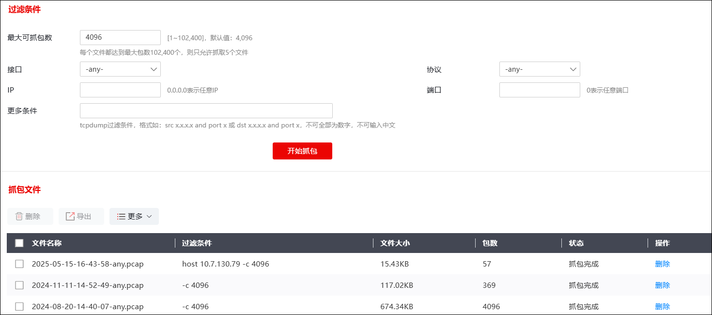
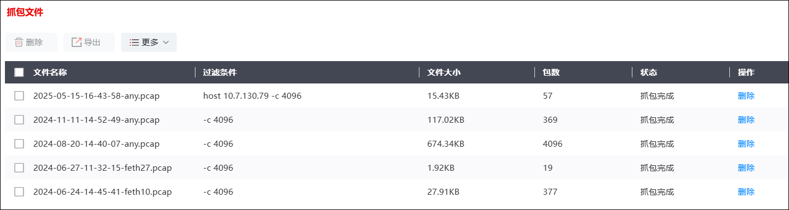

系统支持对指定的流量进行抓包，为管理员进一步分析网络运行状况提供依据，同时为后续制定更切合实际、更严密的防护策略提供参考。
进行网络抓包的具体操作如下。
| 步骤1 | 选择 系统管理 > ，如下图所示。 |

设置抓包条件时，各项参数的具体说明如下表所示。
参数 |
说明 |
|---|---|
最大可抓包数 |
设置每个文件捕获的报文数，当捕获的报文数达到配置值，则自动停止抓包功能。取值范围：1-102400。 说明： 默认情况下最多生成10个抓包文件，如果每个文件都达到最大的包数时，则只允许抓取5个文件。 |
接口 |
设置进行在线抓包的接口。any表示不限制接口。 |
协议 |
设置捕获的报文的协议类型，可选项：any、ip、ip6、arp、tcp、udp、icmp、vlan、mpls、pppoed、ah、esp。any表示不限制协议类型。 |
IP |
设置捕获的报文的IP地址。0.0.0.0表示任意IP。 |
端口 |
设置捕获的报文的端口号。端口取值范围：0-65535。 |
更多条件 |
设置用于过滤的正则表达式，如果一个报文满足表达式的条件，则这个报文将会被捕获。 |
| 步骤2 | 点击【开始】按钮，启动抓包进程。 |
抓包完成后，所抓取的流量信息显示在界面中，如下图所示。

如果没有抓到数据包，则会生成一个24B大小的抓包文件，包数为0。
| 步骤3 | 管理抓包文件。 |
选中相关文件，点击“删除”或“导出”即可将对应文件进行删除和导出操作；点击“更多”>“清空”即可清空所有文件。